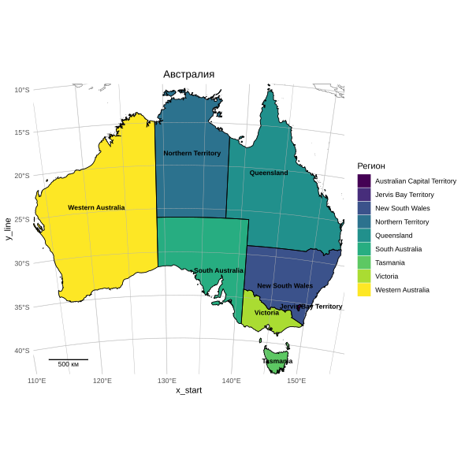

Linking to GEOS 3.13.1, GDAL 3.11.4, PROJ 9.7.0; sf_use_s2() is TRUElibrary(ggplot2)
library(ggrepel)
# 1. Загрузка и подготовка
full_data <- ursa::spatial_read("ne_10m_land")
admin <- ursa::spatial_read("Australia_adm02")
bbox_geo <- c(xmin = 112, xmax = 154, ymin = -44, ymax = -9)
main_crop <- st_crop(full_data, bbox_geo)Warning: attribute variables are assumed to be spatially constant throughout all geometriesWarning: attribute variables are assumed to be spatially constant throughout all geometriestarget_crs <- 3577
main_proj <- st_transform(main_crop, crs = target_crs)
admin_proj <- st_transform(admin_crop, crs = target_crs)
# 2. Координатная сетка
graticule <- st_graticule(lat = seq(-45, -5, by = 5),
lon = seq(110, 160, by = 5))
graticule_proj <- st_transform(graticule, crs = target_crs)
# 3. Обрезка по экстенту административных границ
bbox_proj <- st_bbox(admin_proj)
main_proj_clip <- st_crop(main_proj, bbox_proj)Warning: attribute variables are assumed to be spatially constant throughout all geometriesWarning: attribute variables are assumed to be spatially constant throughout all geometriesWarning: st_point_on_surface assumes attributes are constant over geometriespoints_inside$label <- admin_proj_clip$name
# 5. Ручная масштабная линейка
xmin <- bbox_proj["xmin"]
xmax <- bbox_proj["xmax"]
ymin <- bbox_proj["ymin"]
ymax <- bbox_proj["ymax"]
# Длина линейки: 20% от ширины карты, округлённая до целых километров
scale_km <- round((xmax - xmin) / 1000 * 0.2)
scale_km <- max(50, min(500, scale_km)) # ограничиваем от 50 до 500 км
scale_m <- scale_km * 1000
# Отступы от краёв: 5%
left_margin <- (xmax - xmin) * 0.05
bottom_margin <- (ymax - ymin) * 0.05
# Координаты начала и конца линейки
x_start <- xmin + left_margin
x_end <- x_start + scale_m
y_line <- ymin + bottom_margin
# 6. Построение карты
p <- ggplot() +
geom_sf(data = main_proj_clip, fill = NA, color = "gray50", linewidth = 0.3) +
geom_sf(data = admin_proj_clip, aes(fill = name), color = NA) +
scale_fill_viridis_d(name = "Регион") +
geom_sf(data = graticule_proj, color = "gray70", linewidth = 0.2) +
geom_sf(data = admin_proj_clip, fill = NA, color = "black", linewidth = 0.4) +
geom_sf_text(data = points_inside, aes(label = label),
size = 3, color = "black", fontface = "bold",
check_overlap = TRUE) +
# Масштабная линейка
geom_segment(aes(x = x_start, y = y_line, xend = x_end, yend = y_line),
color = "black", linewidth = 0.6) +
geom_segment(aes(x = x_start, y = y_line - (ymax-ymin)*0.002,
xend = x_start, yend = y_line + (ymax-ymin)*0.002),
color = "black", linewidth = 0.4) +
geom_segment(aes(x = x_end, y = y_line - (ymax-ymin)*0.002,
xend = x_end, yend = y_line + (ymax-ymin)*0.002),
color = "black", linewidth = 0.4) +
annotate("text", x = (x_start + x_end)/2, y = y_line - (ymax-ymin)*0.015,
label = paste0(scale_km, " км"), size = 3) +
coord_sf(xlim = c(xmin, xmax), ylim = c(ymin, ymax), expand = FALSE) +
labs(title = "Австралия") +
theme_minimal() +
theme(plot.title = element_text(hjust = 0.5))
print(p)